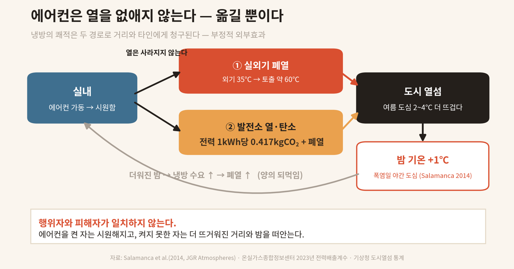
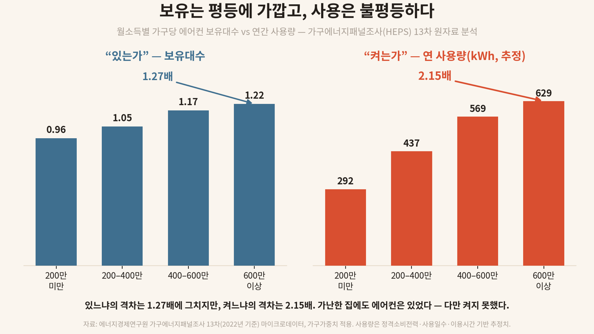
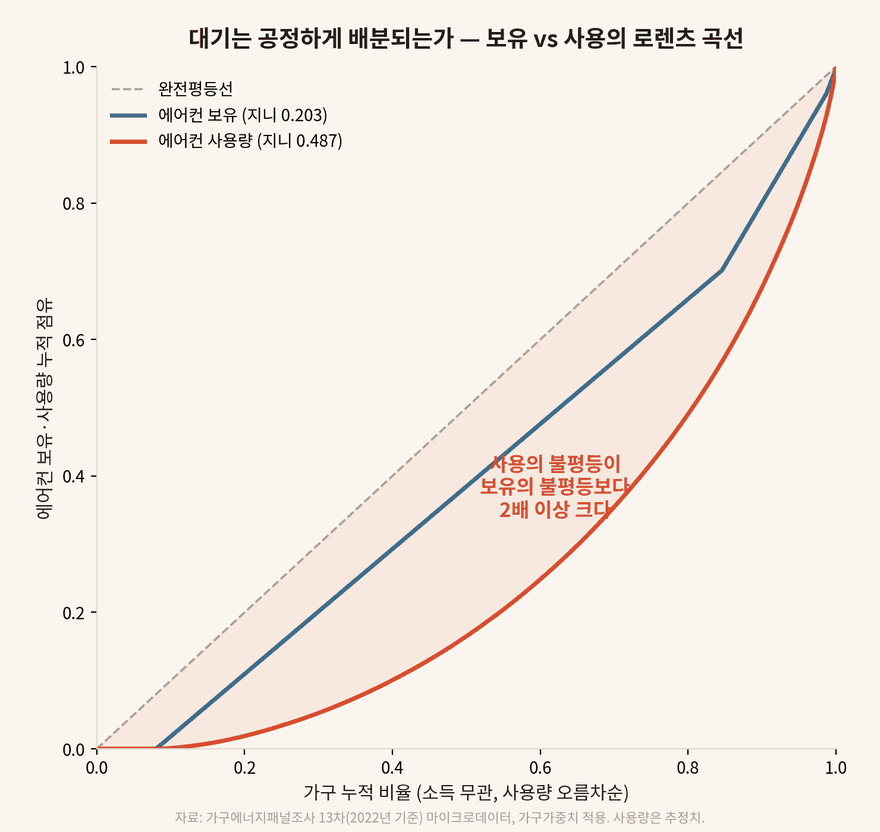
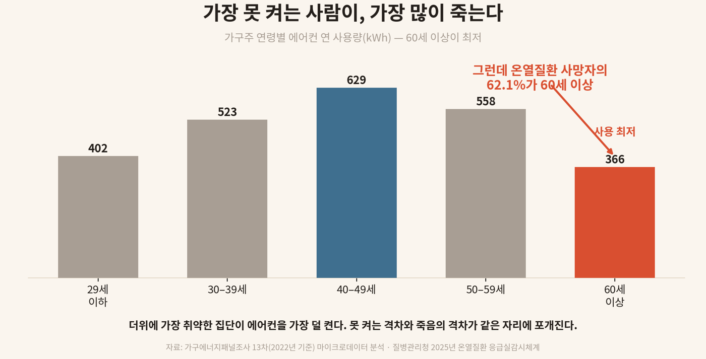

공유재로서의 대기, 부정적 외부효과, 그리고 미지불된 책임에 관한 실증 연구
An Empirical Study on the Appropriation of the Atmospheric Commons and Heat Inequality: Negative Externalities and Unpaid Liability
명랑사회연구소 · VOL.02 수록 연구
국문초록
본 연구는 폭염 불평등을 분배의 문제가 아니라 공유재(commons)의 전유(appropriation)와 미지불된 외부효과의 문제로 재정의한다. 대기는 누구도 배타적으로 소유할 수 없는 공유재이며, 그 냉각·흡수 능력에 대해 모든 구성원은 동등한 권리를 가진다. 그러나 에어컨은 실내의 열을 실외로 이전(移轉)하는 장치로서, 사용자는 자신의 시원함을 얻는 대가로 더워진 대기를 비사용자에게 전가한다. 이는 시장 거래를 거치지 않고 제3자에게 비용을 떠넘기는 전형적인 부정적 외부효과다.
본 연구는 두 가지 질문을 제기한다. 첫째, 공유재인 대기는 공정하게 배분되고 있는가. 둘째, 상대적으로 과소비하여 편익을 가져가는 가구는 그 기회를 박탈당한 가구에게 합당한 대가를 지불하고 있는가. 가구에너지패널조사(HEPS) 13차(2022년 기준) 마이크로데이터 6,311가구를 가구가중치로 분석한 결과, 에어컨 보유의 불평등(지니계수 0.203)은 작지만 그것을 통한 대기 냉각능력의 전유(사용량)는 소득에 비례해 심각하게 불평등했다(지니계수 0.487). 상위 소득집단은 전체 가구의 14.4%로 냉방 전력의 19.4%를 전유한 반면(집중도 1.34), 하위집단은 24.9%로 15.5%에 그쳤다(0.62). 한편 과소비에 따른 탄소 외부효과를 탄소의 사회적 비용으로 환산하면 고소득 가구는 연간 약 6.7만 원(SCC $190/t 기준)의 사회적 비용을 유발하나, 국내 탄소가격 체계에서 실제 내재화되는 금액은 그 10분의 1에도 미치지 못했다. 더욱이 위험은 전유에서 배제된 집단(고령·저소득·1인·노후주거)에 집중되어, 온열질환 사망의 62.1%가 냉방 사용이 가장 낮은 60세 이상에서 발생했다. 결론적으로 대기라는 공유재는 공정하게 배분되지 않으며, 과소비자는 박탈당한 자에게 대가를 지불하지 않는다. 본 연구는 오염자 부담 원칙에 입각한 외부효과 내부화와 위험 기반 에너지복지로의 전환을 제언한다.
주제어: 공유재, 부정적 외부효과, 폭염 불평등, 에너지 빈곤, 오염자 부담 원칙, 에너지 정의
I. 서론
폭염은 흔히 모두에게 평등하게 닥치는 자연현상으로 인식된다. 기상특보는 지역 전체에 동일하게 발령되고, 한낮의 기온은 부유한 동네와 가난한 동네를 가리지 않는다. 그러나 더위의 치명성은 결코 평등하지 않다. 질병관리청 온열질환 응급실감시체계에 따르면, 2025년 온열질환 추정 사망자 29명 중 62.1%가 60세 이상이었고, 환자의 26.0%가 단순노무종사자였으며, 전체 발생의 79.2%가 실외에서 일어났다(질병관리청, 2025). 같은 35℃가 누군가에게는 리모컨 한 번으로 해소되는 불쾌감이고, 누군가에게는 죽음이다.
기존의 폭염·에너지 빈곤 연구는 이 격차를 주로 분배(distribution)의 문제, 즉 자원이 고르게 나뉘지 않았다는 문제로 다루어 왔다(신동면·강은혜, 2024; 진상현·고재경, 2022). 그러나 이러한 접근은 한 가지 중요한 차원을 놓친다. 에어컨이라는 기계의 물리적 작동 방식이다. 에어컨은 열을 소멸시키지 않는다. 열역학 제1법칙에 따라 실내의 열은 사라지지 않고 실외로 이전될 뿐이며, 그 과정에서 소비된 전력만큼의 열이 추가로 발생한다. 즉 한 가구의 시원함은 다른 가구가 공유하는 대기를 더 뜨겁게 만드는 것을 전제로 성립한다. 이는 단순한 분배 불평등이 아니라, 한 주체의 사적 편익이 제3자에게 비용으로 전가되는 부정적 외부효과(negative externality)이며, 더 근본적으로는 공유재인 대기를 일부가 더 많이 전유하는 구조다.
본 연구는 이러한 관점에서 두 가지 연구 질문을 제기한다.
연구 질문 1. 공유재인 대기(의 냉각·흡수 능력)는 사회 구성원 사이에 공정하게 배분되고 있는가?
연구 질문 2. 상대적으로 과소비하여 사적 편익을 가져가는 가구는, 그 편익의 대가(외부효과 비용)를 기회를 박탈당한 가구에게 지불하고 있는가?
이 질문에 답하기 위해 본 연구는 환경경제학의 공유재론과 외부효과 이론을 분석틀로 삼고, 가구에너지패널조사 마이크로데이터를 가구가중치로 분석하여 에어컨 보유와 사용의 불평등을 정량화한다. 나아가 과소비에 따른 탄소 외부효과를 화폐가치로 환산하여, 그 비용이 실제로 얼마나 내재화(internalize)되고 있는지를 검토한다.
II. 이론적 배경
1. 공유재로서의 대기와 그 전유
공유재(commons) 또는 공유자원(common-pool resource)은 누구도 배타적으로 소유하거나 타인의 사용을 배제할 수 없으나(비배제성), 한 사람의 사용이 다른 사람이 쓸 몫을 줄이는(경합성) 자원을 말한다. 대기는 그 전형이다. 누구도 도시의 공기에 울타리를 치고 사유화할 수 없으며, 모든 구성원은 숨 쉴 공기와 쾌적한 기온에 대해 동등한 권리를 가진다. Hardin(1968)은 이러한 공유재가 각자의 사적 이익 추구에 의해 과잉 이용되어 황폐화되는 경향을 '공유지의 비극(tragedy of the commons)'으로 명명했고, Ostrom(1990)은 이를 적절한 제도적 규율로 관리할 수 있음을 보였다.
대기를 공유재로 볼 때, 폭염 상황에서 문제가 되는 것은 대기의 열적 수용 능력과 그 이면의 냉각 능력이다. 도시의 대기는 일정한 온도를 유지할 수 있는 한정된 능력을 가지며, 이는 모두가 함께 나누어 쓰는 자원이다. 그런데 에어컨 사용자는 자신의 실내 열을 이 공유 대기에 방출함으로써, 공유재의 한정된 수용 능력을 사적으로 전유한다. 더 많이, 더 오래 켜는 자는 더 많은 열을 공유 대기에 버리고, 동시에 그만큼의 시원함을 사적으로 전유한다. 켜지 못하는 자는 자신의 몫인 시원한 대기를 빼앗긴 채, 타인이 버린 열까지 떠안는다. 본 연구가 '전유(appropriation)'라는 개념을 사용하는 까닭이 여기에 있다. 이것은 단순히 더 많이 '쓰는' 것이 아니라, 공유된 자원에서 타인의 몫을 '가져오는' 행위다.
2. 부정적 외부효과와 사회적 비용
이 전유 과정은 경제학적으로 부정적 외부효과로 정식화된다. Pigou(1920)는 어떤 경제 행위의 비용 일부가 시장 거래를 거치지 않고 제3자에게 전가될 때, 사적 비용(private cost)과 사회적 비용(social cost) 사이에 괴리가 발생한다고 보았다. 에어컨 사용자가 지불하는 전기요금은 시원함의 사적 비용이다. 그러나 더워진 거리, 상승한 도시 기온, 화력발전에서 배출된 탄소 — 이러한 사회적 비용은 요금에 포함되지 않는다. Pigou는 이 괴리를 조세(피구세)로 교정하여 외부효과를 내부화할 것을 제안했다.
에어컨 폐열이 실제로 도시 기온을 끌어올린다는 점은 실증적으로 확인된다. Salamanca et al.(2014)은 물리 기반 결합 모형으로 미국 피닉스를 시뮬레이션한 결과, 에어컨 폐열이 야간 도심 기온을 평균 1℃ 이상 상승시킴을 보였다. 더욱이 이 효과는 '더워진 밤 → 냉방 수요 증가 → 폐열 증가'의 양의 되먹임(positive feedback)을 낳는다. 외부효과는 두 경로로 발생한다. 첫째는 실외기를 통한 국지적 폐열(외기 35℃일 때 토출 약 60℃), 둘째는 발전 부문의 탄소 배출(2023년 전력배출계수 0.417 kgCO₂/kWh; 온실가스종합정보센터, 2024)이다. 전자는 인접한 비사용자에게, 후자는 공간적으로 분리된 사회 전체와 미래 세대에 비용을 전가한다.

Coase(1960)는 외부효과가 거래비용이 낮을 경우 당사자 간 협상으로 해소될 수 있다고 보았으나, 폭염의 외부효과에는 이 조건이 성립하지 않는다. 피해자는 수백만 명으로 분산되어 있고, 가장 큰 피해를 입는 집단(고령·저소득)은 협상력이 가장 취약하다. 따라서 시장은 이 외부효과를 자율적으로 교정하지 못하며, 제도적 개입이 요구된다.
3. 오염자 부담 원칙과 에너지 정의
외부효과의 비용을 누가 부담해야 하는가에 대해, 국제 규범과 국내법은 명확한 답을 제시한다. 오염자 부담 원칙(Polluter Pays Principle)은 1972년 OECD가 채택하고 리우선언 제16조가 재확인한 환경정책의 기본 원칙으로, 부담을 일으킨 자가 그 방지·복원의 비용을 진다는 것이다. 한국의 환경정책기본법 제7조 역시 "자기의 행위 또는 사업활동으로 환경오염의 원인을 야기한 자는 그 오염의 방지와 회복·복원의 책임을 진다"고 명문화한다.
이 원칙을 폭염의 외부효과에 적용하면, 더 많이 전유하고 더 많은 열·탄소를 배출한 자가 그 비용을 부담해야 한다는 규범적 결론이 도출된다. 행위자와 피해자가 일치할 때 책임은 자연히 분담되지만, 양자가 분리될 때 비용을 균등 분담하는 것은 정의가 아니다. 부담을 일으킨 자가 더 많이, 사실상 전부를 부담하는 것이 책임의 비대칭성에 부합한다. 에너지 정의(energy justice) 논의는 이를 분배적 정의(누가 비용과 편익을 가지는가), 절차적 정의(누가 결정에 참여하는가), 인정의 정의(누가 가시화되는가)의 세 차원으로 구체화한다(진상현·고재경, 2022).
4. 빈곤의 과정: 인정의 차원
조문영(2022)은 빈곤을 소득·재산으로 측정되는 정량적 결과가 아니라, 제도와 담론이 특정한 사람을 빈자로 만들어 내는 과정이자 통치의 산물로 본다. 빈곤을 '수급자'라는 좁은 범주로 분쇄하고 걸러내는 관료적 기제가 작동하며, 그 결과 수급 경계 바깥의 위험은 비가시화된다. 이 관점은 본 연구의 인정적 차원을 보강한다. 폭염의 피해는 '모두의 더위'라는 평등의 외양 뒤에서 특정 집단에 쏠리지만, '나는 에어컨이 있으니 괜찮다'는 감각이 그 죽음을 남의 일로 만든다. 외부효과의 가해자가 피해를 인지하지 못하는 구조 자체가, 책임의 회피를 정당화한다.
III. 연구 자료 및 방법
1. 자료
주 분석 자료는 에너지경제연구원의 가구에너지패널조사(Household Energy Panel Survey, HEPS) 13차(2022년 기준) 마이크로데이터다. 전국 가구를 대상으로 가전기기 보유·사용, 에너지 소비, 가구 특성을 조사한 패널로, 본 연구는 가구 횡단가중치(cwgt22_hh)를 적용해 모집단을 추정했다. 분석 표본은 결측 가중치를 제외한 6,311가구이며, 가중 추정 모집단은 약 2,177만 가구다. 보조 자료로 질병관리청의 2025년 온열질환 응급실감시체계 결과, 온실가스종합정보센터의 전력배출계수, 산업통상자원부·한국에너지공단의 에너지바우처 자료를 활용했다.
2. 변수 및 측정
표 1
주요 변수의 정의와 측정
| 변수 | 정의 | 측정 |
|---|---|---|
| 에어컨 보유 | 가구의 에어컨 보유 여부·대수 | 보유 더미(1대 이상), 총 사용대수 |
| 에어컨 사용량 | 연간 냉방 전력 소비(추정) | Σ(정격소비전력 kW × 연사용일수 × 1일이용시간) |
| 월평균소득 | 가구 월평균 소득(세전) | 4구간(200만 미만/200–400/400–600/600만 이상) |
| 가구주 연령 | 가구주 출생연도 기준 | 5구간(29세 이하~60세 이상) |
| 전용면적 | 주거용 전용면적 | 5구간(33㎡ 미만~132㎡ 이상) |
| 입주형태 | 점유 형태 | 자가/전세/월세/기타 |
| 가구원수 | 가구원 수 | 1~6인 이상 |
주. HEPS = 가구에너지패널조사(에너지경제연구원).
에어컨 사용량은 각 가구가 보유한 모든 에어컨에 대해 정격소비전력·연평균 사용일수·1일 평균 이용시간을 곱하여 합산한 추정치다. 정격소비전력은 실제 소비전력의 상한 성격을 가지므로 절대값은 과대추정 가능성이 있으나, 본 연구의 핵심 관심은 집단 간 상대 격차(비율)이며, 후술하듯 전력가정이 개입하지 않는 사용시간 지표 및 독립 조사(에너지총조사)와의 교차검증으로 견고성을 확보했다.
원자료에서 분석 변수에 이르는 측정 절차는 다음과 같다.
1단계 · 자료 결합과 분석 단위. 가구에너지패널조사 13차 마이크로데이터는 가구(hhd)·에너지(energy)·가전기기(app)·차량(vh)의 네 파일로 구성된다. 본 연구는 가구 속성 파일(hhd)과 가전기기 파일(app)을 가구 고유식별자(id_hh)로 내부결합(inner join)하였으며, 분석 단위는 가구다. 결합 후 표본은 6,311가구다.
2단계 · 가중치 적용. 모집단 추정을 위해 가구 횡단가중치(cwgt22_hh)를 모든 집계에 적용하고, 가중치가 0 이하이거나 결측인 사례는 제외하였다(가중 추정 모집단 약 2,177만 가구).
3단계 · 에어컨 식별. 코드집에서 에어컨이 가전기기 분류 3번(s13_app3_*)에 해당함을 확인하였다. 한 가구는 최대 6대까지 개별 에어컨 정보(종류·소비전력·사용일수·이용시간 등)를 보고한다.
4단계 · 보유 변수 구성. 보유대수는 에어컨 총 사용대수(s13_app3_numb)를 사용하고, 보유율은 보유대수가 1대 이상인 가구의 가중 비율로 산출하였다.
5단계 · 사용량 변수 구성. 연간 냉방 전력 사용량은 직접 계측값이 아니라 추정치로, 가구가 보유한 각 에어컨 i에 대해 〔정격소비전력(s13_app3_i007_r, W) ÷ 1,000 × 연평균 사용일수(s13_app3_i018_r, 일) × 1일 평균 이용시간(s13_app3_i020_r, 시간)〕을 계산하여 보유한 모든 에어컨에 대해 합산하였다. 전력 가정의 영향을 배제한 보조 지표로 연 사용시간(Σ 연사용일수 × 1일이용시간)도 함께 산출하였다.
6단계 · 결측 처리. 무응답(-7 해당없음, -8 모름, -9 거절) 등 음수 코드는 모두 결측으로 변환하였다. 사용량 추정 시 구성요소(소비전력·일수·시간) 중 하나라도 결측이면 해당 에어컨 항을 제외하고, 비보유 가구의 사용량은 0으로 처리하였다. 그 결과 보유 가구의 97.8%에서 사용량 추정이 가능하였다.
7단계 · 가구 특성의 범주화. 코드집의 범주화 변수를 사용하였다. 월평균소득(g_m_s13_806, 4구간), 가구주 연령(g_m_s13_803_3, 5구간), 전용면적(g_m_r1_s13_106_10, 5구간), 입주형태(g_s13_111, 자가·전세·월세·기타), 가구원수(g_s13_801)다.
8단계 · 집단별 추정량 산출. 각 특성 범주별로 가중 평균·비율을 계산하였다. 보유율, 평균 보유대수, 연 사용량(비보유 0 포함 가구 평균), 연 사용시간을 산출하고, 보유 가구만을 대상으로 한 사용량(집약적 한계, intensive margin)을 별도로 계산하였다. 또 사용 점유율(집단 가중 사용량 합 ÷ 전체)과 집중도(사용 점유율 ÷ 가구 비중)를 구하고, 격차/비율은 최상위 소득집단 ÷ 최하위 소득집단으로 정의하였다.
9단계 · 불평등 지표. 보유와 사용 각각의 가중 지니계수를 사다리꼴 로렌츠 근사로 계산하고(보유 0.203, 사용 0.487), 로렌츠 곡선을 작성하였다.
10단계 · 외부효과의 화폐가치. 사용량 추정치에 전력배출계수(0.417 kgCO₂/kWh)를 곱해 가구별 냉방 탄소배출을 산출하고, 탄소의 사회적 비용(SCC) 및 국내 배출권가격 시나리오를 적용해 미지불 외부효과를 화폐가치로 환산하였다(환율 1,350원/달러).
11단계 · 검증. 추정의 견고성은 ① 전력 가정이 개입하지 않는 사용시간 지표로도 동일한 격차(약 2.0배)가 재현되는지, ② 독립 조사인 에너지총조사 공표치와 근사하는지, ③ 보유 가구 한정 분석에서도 격차가 유지되는지로 점검하였다.
3. 분석 방법
분석은 세 단계로 진행된다. 첫째, 소득·가구특성별 보유율·보유대수·사용량의 가중 기술통계를 산출한다. 둘째, 보유와 사용의 분배 불평등을 가중 지니계수와 로렌츠 곡선, 집단별 집중도 지수(사용량 점유율 ÷ 가구 점유율)로 측정한다. 셋째, 과소비에 따른 탄소 외부효과를 전력배출계수와 탄소의 사회적 비용(Social Cost of Carbon, SCC)으로 환산하여, 실제 내재화 수준과 비교한다.
4. 한계
본 연구의 사용량은 추정치이며, 국지적 폐열 외부효과는 화폐가치화에서 제외되어 외부효과 추정은 탄소 경로에 한정된 보수적 하한이다. 횡단 자료로 인과관계가 아닌 분포와 정렬을 다룬다. SCC는 추정 방법에 따라 편차가 크므로 시나리오로 제시한다.
IV. 분석 결과
1. 통념의 검증: 보유는 평등에 가깝다
"가난한 집에는 에어컨이 없다"는 통념은 자료와 부합하지 않는다. 월소득 200만 원 미만 가구의 에어컨 보유율은 88.3%, 600만 원 이상은 94.6%로, 보유 자체는 저소득층에서도 보편적이다. 가구당 보유대수는 0.96대 대 1.22대로 격차는 1.27배에 그친다. 보유의 가중 지니계수는 0.203으로, 비교적 평등한 분포를 보인다.
2. 전유의 불평등: 사용의 격차
격차는 보유가 아니라 사용에서 드러난다. 연간 추정 사용량은 저소득 292.2 kWh, 고소득 628.6 kWh로 2.15배의 격차를 보였다(표 2). 전력가정이 개입하지 않는 사용시간으로도 2.02배(192시간 대 387시간)로 동일한 패턴이 나타났다. 주목할 점은 에어컨을 보유한 가구만 비교해도 격차가 유지된다는 것이다(저소득 331.8 kWh, 고소득 665.0 kWh, 2.0배). 즉 격차는 보유 여부가 아니라 가변비용(전기요금) 앞에서의 사용 억제에서 발생한다. 소유는 권리가 되지 못한다.
표 2
소득분위별 에어컨 보유와 사용
| 월평균소득 | 가구 비중 | 보유율 | 보유대수 | 연 사용량(kWh) | 연 사용시간 | 사용 점유율 | 집중도 |
|---|---|---|---|---|---|---|---|
| 200만 미만 | 24.9% | 88.3% | 0.96 | 292.2 | 192 | 15.5% | 0.62 |
| 200–400만 | 30.4% | 91.6% | 1.05 | 437.3 | 285 | 28.4% | 0.93 |
| 400–600만 | 30.2% | 94.7% | 1.17 | 569.4 | 358 | 36.7% | 1.21 |
| 600만 이상 | 14.4% | 94.6% | 1.22 | 628.6 | 387 | 19.4% | 1.34 |
| 격차/비율 | 1.07배 | 1.27배 | 2.15배 | 2.02배 | 2.16배 |
주. 가구에너지패널조사 13차(2022년 기준), 가구가중치 적용. 사용량은 추정치다. 집중도 = 사용 점유율 ÷ 가구 비중. 격차/비율은 600만 원 이상 ÷ 200만 원 미만.
본 분석의 수치는 독립 조사인 에너지총조사(2020년 조사, 2022년 기준 추정)와 거의 일치한다(보유 1.3배, 사용 2.15배, 저소득 283.7 kWh, 고소득 611.0 kWh). 서로 다른 두 조사가 다른 방법으로 동일한 결론에 도달했다는 점은, 이 격차가 측정 오차가 아니라 구조임을 시사한다.

3. 공유재 배분의 불공정: 지니·집중도·로렌츠 곡선
연구 질문 1에 대한 답은 분배 불평등 지표에서 분명해진다. 에어컨 사용량의 가중 지니계수는 0.487로, 보유의 지니계수(0.203)의 2.4배에 달했다. 이는 통상적인 소득 불평등 수준에 필적한다. 즉 대기의 냉각 능력에 대한 권리는 보유 단계에서는 비교적 평등하게 주어지지만, 실제 전유 단계에서는 소득에 비례해 심각하게 불평등하게 배분된다.
집중도 지수는 이 불공정을 더 직접적으로 보여준다(표 2). 상위 소득집단은 전체 가구의 14.4%에 불과하나 냉방 전력의 19.4%를 전유했고(집중도 1.34), 하위집단은 24.9%의 가구로 15.5%만을 사용했다(0.62). 상위집단은 비례적 몫의 1.34배를, 하위집단은 0.62배를 가져가, 1인당 전유에서 약 2.2배의 격차가 발생한다. 로렌츠 곡선(그림 3)에서 사용량 곡선은 보유 곡선보다 완전평등선에서 훨씬 멀리 이탈하여, 전유의 불평등이 보유의 불평등을 압도함을 시각적으로 확인할 수 있다.

따라서 연구 질문 1에 대한 답은 '아니오'다. 공유재인 대기는 공정하게 배분되지 않으며, 그 전유는 소득 위계를 따라 집중된다.
4. 위험과 전유의 정렬: 죽음의 분포
전유에서 배제된 집단은 동시에 폭염 위험에 가장 노출된 집단이다(표 3). 가구주가 60세 이상인 가구는 사용량이 366.4 kWh로 전 연령에서 최저였으며(40대의 58%), 노인 1인가구는 272.4 kWh로 그 외 가구(527.3 kWh)의 절반에 그쳤다. 그런데 온열질환 사망자의 62.1%가 바로 이 60세 이상에서 발생했다(그림 4). 가장 더위에 취약한 집단이 가장 적게 전유한다. 못 켜는 격차와 죽는 격차가 동일한 좌표에 포개진다.

주거 차원도 같은 방향을 가리킨다. 전용면적 33㎡ 미만(반지하·옥탑·쪽방 면적대) 가구는 333.0 kWh, 132㎡ 이상은 632.4 kWh로 1.9배 격차를 보였고, 입주형태로는 자가(471.1)〉전세(552.6은 예외적으로 높으나 표본 특성)·월세(375.8)·기타(338.1)의 순으로, 점유 안정성이 낮을수록 전유가 적었다.
표 3
가구 특성별 에어컨 보유와 사용
| 구분 | 범주 | 보유율 | 보유대수 | 연 사용량(kWh) |
|---|---|---|---|---|
| 가구주 연령 | 40–49세 | 95.4% | 1.19 | 628.8 |
| 60세 이상 | 89.4% | 1.02 | 366.4 | |
| 전용면적 | 33㎡ 미만 | 89.0% | 0.92 | 333.0 |
| 132㎡ 이상 | 93.1% | 1.31 | 632.4 | |
| 입주형태 | 자가 | 92.5% | 1.11 | 471.1 |
| 월세 | 89.4% | 1.01 | 375.8 | |
| 가구원수 | 1인 | 87.9% | 0.95 | 293.2 |
| 4인 | 94.7% | 1.24 | 674.3 |
주. 가구에너지패널조사 13차(2022년 기준), 가구가중치 적용. 연 사용량은 추정치다.
5. 미지불 외부효과의 화폐가치
연구 질문 2는 과소비자가 그 대가를 지불하는가를 묻는다. 이를 검토하기 위해 과소비에 따른 탄소 외부효과를 화폐가치로 환산했다. 고소득 가구는 냉방으로 연간 약 262.1 kgCO₂를 배출하며, 이는 저소득 가구보다 140.2 kg 많은 양이다. 이를 탄소의 사회적 비용으로 환산하면, SCC $190/tCO₂(미국 EPA, 2023) 기준 고소득 가구당 연 67,232원의 사회적 비용에 해당한다(표 4).
문제는 이 비용이 거의 내재화되지 않는다는 점이다. 국내 배출권(K-ETS) 가격(약 9,000–30,000원/t)으로 환산하면 고소득 가구의 외부비용은 연 2,359–7,863원에 불과하며, 그나마 이 비용은 발전사에 부과될 뿐 가정용 요금에 온전히 전가되지 않는다. SCC $190 기준으로 환산한 탄소 외부효과(약 107원/kWh)는 가정용 전기요금 단가(약 120–160원/kWh)에 필적하는 규모이나, 요금 어디에도 반영되지 않는다. 전국 단위로는 상위 소득집단 약 309만 가구가 저소득 대비 연 약 43만 톤의 이산화탄소를 추가 배출하며, 이는 SCC $190 기준 연 1,111억 원의 미지불 사회적 비용에 해당한다.
표 4
미지불 탄소 외부효과의 화폐가치 추정
| 탄소가격 기준 | 단가(원/tCO₂) | 고소득 가구 연 외부비용 | 초과분(저소득 대비) | 전국 초과배출 사회적비용 |
|---|---|---|---|---|
| K-ETS(국내) | 15,000 | 3,932원 | 2,104원 | 65억 원 |
| SCC $50/t | 67,500 | 17,693원 | 9,467원 | 292억 원 |
| SCC $100/t | 135,000 | 35,385원 | 18,933원 | 585억 원 |
| SCC $190/t | 256,500 | 67,232원 | 35,974원 | 1,111억 원 |
주. 전력배출계수 0.417 kgCO₂/kWh, 환율 1,350원/달러 적용. 국지적 폐열 외부효과는 제외된 보수적 하한이다. SCC = 탄소의 사회적 비용(social cost of carbon).
여기에 더해, 실외기 폐열이 인접 비사용자에게 직접 전가하는 국지적 외부효과는 화폐가치화에 포함되지 않았다. 이를 고려하면 미지불된 비용은 더욱 커진다. 한편 가정용 전기요금 누진제는 다소비 가구에 높은 단가를 부과하지만, 이는 한국전력의 수입일 뿐 피해를 입은 제3자에게 이전되는 보상이 아니며, 탄소의 사회적 비용을 반영하지도 않는다.
따라서 연구 질문 2에 대한 답 역시 '아니오'다. 과소비자는 자신이 유발한 외부효과의 대가를 박탈당한 자에게 지불하지 않는다. 내재화되는 비용은 사회적 비용의 10분의 1에도 미치지 못하며, 국지적 폐열에 대해서는 사실상 전무하다.
V. 논의
본 연구의 두 발견 — 공유재의 불공정한 배분(지니 0.487)과 미지불된 외부효과 — 은 폭염 불평등을 '동정의 문제'에서 '책임의 문제'로 전환한다. 저소득·고령·노후주거 가구가 더위에 죽는 것은 그들이 단지 취약하기 때문이 아니라, 타인의 전유가 그들의 몫(시원한 대기)을 빼앗고 그들에게 비용(더워진 대기)을 전가하기 때문이다. 이는 분배의 우연이 아니라 구조적 수탈이다.
특히 제도의 역설에 주목할 필요가 있다. 현행 에너지바우처는 오염자 부담 원칙이 아니라 잔여적 부조(residual assistance)의 논리로 설계되어 있다. 재원은 일반 재정에서 나오고, 대상은 수급 경계로 선별되며, 신청주의로 운영된다. 그 결과 위험이 가장 큰 집단(수급 경계 바깥의 차상위 노인, 독거노인)이 제도에서 탈락한다. 실제로 바우처 미사용액의 64.7%가 1인가구에서 발생했다(정운천 의원실·한국에너지공단, 2022). 조문영(2022)의 분석대로, 빈곤을 수급이라는 컨테이너에 격리하는 통치 기제가 위험의 분포와 제도의 분포를 어긋나게 만든다. 위험을 유발한 자(과소비자)는 책임에서 면제되고, 위험을 떠안은 자(피전유자)는 제도의 문턱에서 거부된다.
VI. 결론 및 정책 함의
본 연구는 폭염 불평등을 공유재의 전유와 미지불된 외부효과의 문제로 재정의하고, 가구에너지패널조사 마이크로데이터로 두 연구 질문에 답했다. 첫째, 공유재인 대기는 공정하게 배분되지 않는다(사용량 지니 0.487, 상위집단 집중도 1.34). 둘째, 과소비자는 그 대가를 지불하지 않는다(내재화율이 사회적 비용의 10% 미만). 그리고 전유에서 배제된 집단에 죽음이 집중된다(사망의 62.1%가 사용 최저 집단).
정책적 함의는 세 가지다. 첫째, 외부효과의 내부화다. 오염자 부담 원칙에 입각해, 다소비·고탄소 냉방에 탄소의 사회적 비용을 반영한 가격 신호를 부과하고, 그 재원을 취약계층의 냉방 보전에 순환시키는 설계가 필요하다. 둘째, 제도를 위험에 정렬한다. 신청주의를 직권·자동 지급으로 전환하고, 수급 경계에 갇힌 자격을 위험 기반으로 확대해야 한다(신동면·강은혜(2024)의 중위소득 50% 단일 기준 제안 참조). 셋째, 냉방을 권리로 선언한다. 폭염이 일상이 된 시대에 적정 실내온도 유지 능력은 보편적 기본 서비스의 일부로 다루어져야 한다(진상현·고재경, 2022).
대기는 누구의 것도 아니다. 그러나 누군가는 그 대기를 시원하게 바꾸고, 누군가는 그렇게 더워진 대기를 떠안는다. 본 연구의 데이터가 보여주는 것은, 그 전유와 전가가 우연이 아니라 소득의 위계를 따라 정연하게 배열되어 있으며, 그에 대한 대가가 지불되지 않고 있다는 사실이다. 더위는 평등하지 않았다. 그러나 책임은 평등하게 물을 수 있다.
참고문헌
- 질병관리청 (2025). 2025년 온열질환 응급실감시체계 운영 결과(보도자료, 2025.10.16.).
- 에너지경제연구원. 가구에너지패널조사(HEPS) 13차(2022년 기준) 마이크로데이터.
- 온실가스종합정보센터 (2024). 2024년 승인 국가 온실가스 배출계수(전력 0.4173 tCO₂eq/MWh, 2023년 기준).
- 신동면·강은혜 (2024). 한국의 에너지 빈곤율 추정에 관한 연구. 정책분석평가학회보, 34(2).
- 신동면·이주하 (2019). 기후변화에 대응한 에너지빈곤 정책에 관한 비교연구: 영국·프랑스·스웨덴을 중심으로. 사회복지법제연구, 10(3).
- 진상현·고재경 (2022). 보편적 기본 서비스 관점에서 한국 에너지 복지 정책의 타당성 분석. 융합사회와 공공정책, 15(4).
- 조하현·임형우·김해동 (2019). 국내 에너지빈곤율 측정 및 에너지빈곤 정확도 분석. 환경정책, 27(4).
- 조문영 (2022). 빈곤 과정: 빈곤의 배치와 취약한 삶들의 인류학. 글항아리.
- 정운천 의원실·한국에너지공단 (2022). 2022년 국정감사 제출자료.
- Coase, R. H. (1960). The Problem of Social Cost. Journal of Law and Economics, 3, 1–44.
- Hardin, G. (1968). The Tragedy of the Commons. Science, 162(3859), 1243–1248.
- Ostrom, E. (1990). Governing the Commons: The Evolution of Institutions for Collective Action. Cambridge University Press.
- Pigou, A. C. (1920). The Economics of Welfare. Macmillan.
- Salamanca, F., Georgescu, M., Mahalov, A., Moustaoui, M., & Wang, M. (2014). Anthropogenic Heating of the Urban Environment due to Air Conditioning. Journal of Geophysical Research: Atmospheres, 119(10), 5949–5965.
※ 부록: 본 연구의 분석 코드와 집계표는 분석_3장_에어컨_보유vs사용_HEPS.xlsx 및 데이터 보강 노트에 수록. 온열질환 직업·발생장소 비율은 환자 전체 기준이며 사망자 기준과 다름. 에어컨 사용량(kWh)은 정격소비전력·사용일수·이용시간 기반 추정치로, 절대값보다 집단 간 격차의 해석에 무게를 둔다.